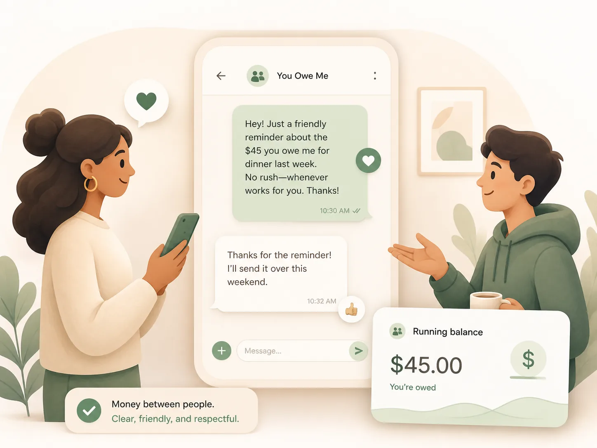
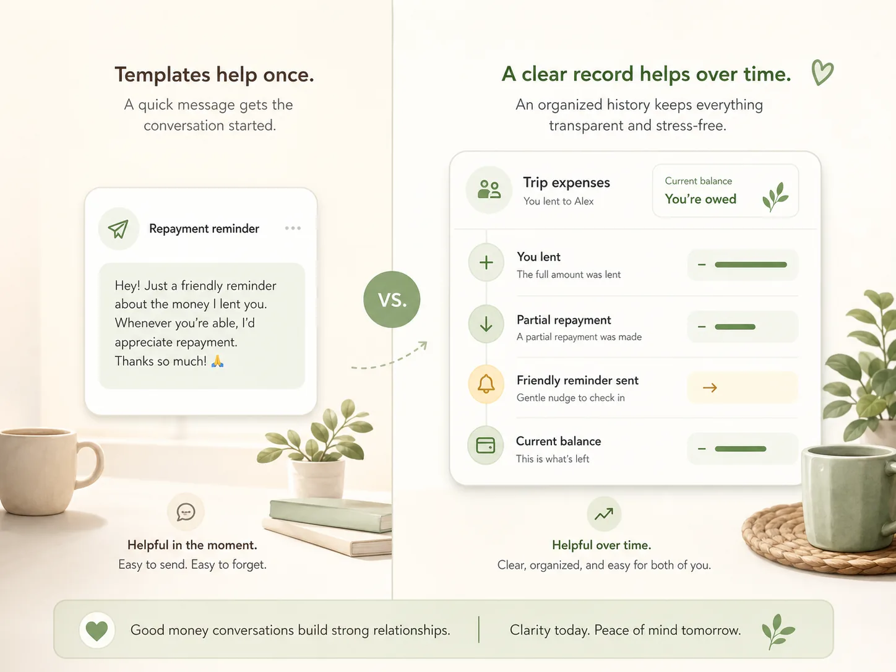

Free tool
Repayment Reminder Text Examples for Asking Someone to Pay You Back
Use these repayment reminder text examples when someone owes you money and you want to follow up clearly without sounding rude. Choose a tone, copy a message, and adjust the amount, reason, and timing to fit your situation.
A good reminder is simple: name the amount, give the context, and make the next step clear. The goal is not pressure. The goal is clarity before silence turns into awkwardness.
This page gives copyable repayment reminder text examples for everyday personal money situations: friends, roommates, family members, partners, overdue balances, partial repayments, and repayment updates. You Owe Me helps people keep money between real people clear: who owes whom, what was paid, what was repaid, when to follow up, and what to say.
This page runs in your browser. If you use the optional fields below, they are only used to customize the examples on this page and are not sent anywhere.

Copy a repayment reminder text
Pick a situation below. You can use the examples as written or fill in the optional fields to make them more specific before copying.
These examples are for everyday personal money situations, not legal debt collection or formal collections.
If the amount came from one shared bill, use the Split Expense Calculator first so your reminder is based on a clear number.
Showing 22 examples
Friendly first reminder
Use when: The person may have simply forgotten and you want to keep the tone easy.
Best for: Friends, small IOUs, dinner, tickets, rides, casual payback.
Polite but clear reminder
Use when: You want to be warm but more specific about the next step.
Best for: Balances that have been open for a little while.
Firm repayment reminder
Use when: You have already waited or reminded them before and need a clearer boundary.
Best for: Repeated delays, overdue IOUs, unresolved balances.
Overdue repayment reminder
Use when: There was a due date and it has passed.
Best for: Promised repayment dates and overdue balances.
Low-pressure but specific reminder
Use when: You want to give them space without making the amount vague.
Best for: Close friends, family, partners, sensitive situations.
Reminder after silence
Use when: You sent a message before and have not received a response.
Best for: No response, unclear timing, quiet balances.
Ask for a specific repayment date
Use when: You need to close the loop and want a concrete date.
Best for: Simple balances where timing matters.
Friend payback reminder
Use when: The relationship is casual and you do not want the message to feel heavy.
Best for: Friends, small loans, shared meals, tickets, travel costs.
Roommate bill reminder
Use when: A roommate owes their share of rent, utilities, groceries, or household costs.
Best for: Utilities, rent extras, groceries, supplies, monthly household bills.
Roommate monthly settle-up
Use when: You are settling several household costs at once.
Best for: End-of-month roommate settle-ups.
Family reimbursement reminder
Use when: A family member owes you for something you paid on their behalf.
Best for: Parents, siblings, adult children, shared family purchases.
Sibling shared parent cost reminder
Use when: Siblings are sharing parent-related or caregiving-related expenses.
Best for: Parent expenses, medical purchases, household supplies, shared family bills.
Partner shared expense reminder
Use when: You share costs with a partner and want clarity without sounding transactional.
Best for: Couples, shared groceries, travel, subscriptions, household costs.
Partner reminder with relationship-safe wording
Use when: You want to protect the tone of the relationship while still being clear.
Best for: Sensitive partner conversations and uneven shared spending.
Partial repayment follow-up
Use when: They paid some, but not all, of what they owe.
Best for: Partial repayments, remaining balances, split payments.
Partial repayment with flexible timing
Use when: You want to acknowledge progress and avoid sounding ungrateful.
Best for: Friends or family paying back in pieces.
Larger balance repayment plan
Use when: The amount is large enough that one payment may not be realistic.
Best for: Larger IOUs, long-running balances, repayment plans.
Group trip balance reminder
Use when: You calculated travel or group costs after the fact.
Best for: Trips, rides, hotels, tickets, shared travel costs.
Professional informal payment reminder
Use when: This is a small client, side-work, or informal professional balance.
Best for: Small client balances, side work, informal business repayments.
Repayment update when you owe someone
Use when: You owe money and want to preserve trust before the other person has to ask.
Best for: When you owe someone and need more time.
Repayment sent update
Use when: You already paid and want to keep the record clear.
Best for: Confirming a partial repayment or full repayment.
Final settle-up message
Use when: You want to close the balance cleanly.
Best for: Finishing an IOU, moving out, ending a trip, closing a shared balance.
If this is a one-time reminder, a template may be enough. If this person owes you across multiple expenses, repayments, or partial payments, track the balance in You Owe Me so the next message starts from a clear record.
What to include in a repayment reminder
A repayment reminder works best when it is factual, short, and easy to answer. You do not need to explain too much or apologize for asking. The clearest messages usually include four things:
- The person’s name
- The amount owed
- What the money was for
- A clear next step or timing
For example: “Hey Alex, quick reminder about the $45 from dinner. Could you send it by Friday?” That is direct without being cold.
Choose the right tone
Friendly
Use a friendly tone when the amount is small, the relationship is close, or the person probably forgot. Friendly does not mean vague. You can still include the amount and next step.
“Hey [Name], quick reminder about the [amount] from [what it was for]. Whenever you get a chance, could you send it over?”
Polite
Use a polite tone when you want the reminder to feel respectful but clear. This works well when the balance has been open for a while or when you want a specific date.
“Hi [Name], just checking in on the [amount] from [what it was for]. Could you send it by [date], or let me know what timing works?”
Firm
Use a firm tone when you have already followed up, there was a promised date, or the balance is starting to drag on. Firm should still stay factual, not accusatory.
“Hey [Name], I wanted to follow up again on the [amount] from [what it was for]. I’d like to get this settled by [date].”
For the deeper approach behind tone, timing, and neutrality, read the guide on how to ask someone to pay you back without being rude.
What not to say when asking for money back
Most repayment reminders go wrong when the message turns emotional before it needs to. Avoid wording that makes the other person defend themselves instead of resolving the balance.
Avoid:
- “Are you avoiding paying me?”
- “You always do this.”
- “I guess I’ll just forget about it.”
- “I really need it urgently” if that is not true.
- “You clearly do not care.”
A better reminder stays specific: amount, context, next step. Clear is usually kinder than vague resentment.
When should you send a repayment reminder?
There is no perfect universal timing, but the right moment usually depends on the relationship, amount, and whether a repayment date was already discussed.
- For small informal IOUs, a friendly reminder after 7–14 days is usually reasonable.
- For shared bills like rent, utilities, groceries, or trips, follow up within the same billing cycle.
- For larger amounts, agree on a repayment date instead of relying on memory.
- If someone promised a date and missed it, it is reasonable to follow up after that date passes.
- If you owe someone, a repayment update before they ask can preserve trust.
If timing is the hard part, read the guide on when to ask for money back or send a repayment update.
Templates help once. You Owe Me helps when the balance keeps changing.
A repayment reminder template is useful when you need one message. But real money between people often changes after the first reminder. Someone pays back part of the amount. A new shared expense appears. A roommate bill repeats next month. A family reimbursement gets added later. Then the message is no longer the only problem — the record is.
You Owe Me helps you keep the balance, repayment history, reminders, partial repayments, and follow-up context in one place. Instead of guessing what happened before you message someone, you can start from the actual record.
For the full communication framework behind follow-ups, repayment updates, and asking for money, read the awkward money conversations guide. For ongoing balances, use the app to track money owed.

A template can help you write one message. You Owe Me helps when the balance has a history.
Related tools and guides
Repayment reminder text FAQ
What is a good repayment reminder text?
A good repayment reminder text is short, factual, and easy to answer. Include the amount, what the money was for, and a clear next step. For example: “Hey [Name], quick reminder about the [amount] from [what it was for]. Could you send it by [date]?”
How do I politely remind someone to pay me back?
Assume forgetfulness first, keep the message neutral, and avoid accusations. A polite reminder can be as simple as: “Hi [Name], just checking in on the [amount] from [what it was for]. Could you send it when you get a chance?”
Is it rude to ask someone to pay you back?
No. It is not rude to ask for money back when the message is calm and clear. It becomes uncomfortable when the wording turns accusatory, vague, or passive-aggressive. Clarity is usually more respectful than silent resentment.
How long should I wait before sending a repayment reminder?
For small informal IOUs, 7–14 days is often reasonable. For rent, utilities, trips, or shared bills, it usually makes sense to follow up within the same billing cycle. If there was a promised repayment date, follow up after that date passes.
What should I say if someone only paid back part of what they owe?
Acknowledge the partial repayment and make the remaining balance clear. For example: “Thanks for sending [partial amount paid]. I have [remaining amount] still open from [what it was for]. Could you let me know when you can send the rest?”
How do I remind a roommate to pay their share?
Keep it household-focused instead of personal. For example: “Hey [Name], your share of [what it was for] came to [amount]. Could you send it when you get a chance so we can keep the apartment bills clear?”
What if I owe someone and cannot repay everything yet?
Send a repayment update before they have to ask. Say what you can pay, when you can pay it, and what remains. Silence usually creates more tension than a clear update.
Should I include the exact amount in a repayment reminder?
Yes. Including the exact amount prevents confusion and keeps the message factual. If the amount came from a shared bill, calculate the split first so your reminder is based on a clear number.
Can You Owe Me write repayment reminders for me?
Yes. Money Conversations in You Owe Me can help generate follow-up and repayment-update messages from the real balance and history, so the message is based on what actually happened instead of a generic template.
Keep repayment reminders clear before they get awkward
A repayment reminder is easier to send when the balance is already clear. You Owe Me helps you keep money between people organized with running balances, repayment history, partial repayments, reminders, and Money Conversations for calmer follow-ups.